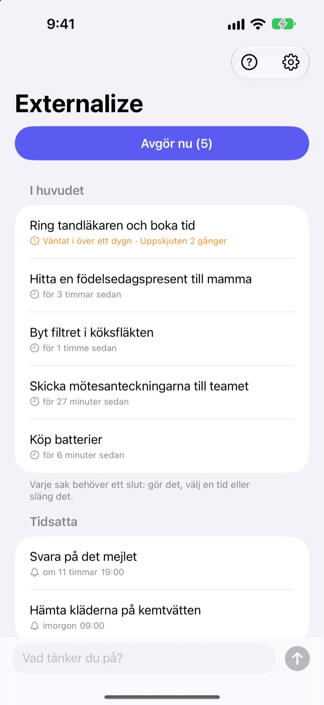
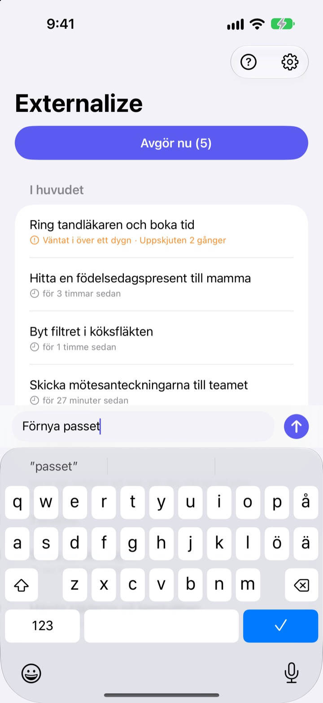
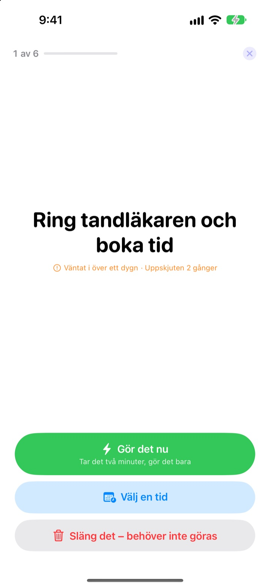
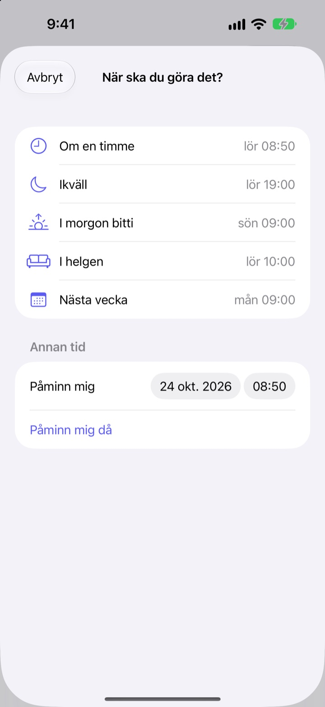

Skriv ner nu.
Avgör ikväll.
”Just det, jag måste …” Få ut det ur huvudet med några ord och släpp det. På kvällen tar du hand om det som är kvar, en sak i taget.
Alla funktioner är gratis. Inget konto, ingen inloggning.

Testa här
Skriv något du går och tänker på, eller tryck på ett exempel. Tryck sedan på ”Avgör nu” och ge varje sak ett slut.
Även småsaker tar plats i huvudet
I duschen, vid rödljuset, precis innan du somnar: ”Det där måste jag göra.” Det finns ingenstans att skriva, så du håller kvar det i huvudet, och det du håller på med blir lidande. Att göra-appar vill ha en lista och ett datum först, och då blir själva skrivandet en uppgift.
Tre sekunder, sen släpper du det
Öppna appen och skriv på raden längst ner. Inga listor, mappar eller förfallodatum.
Tryck på widgeten på låsskärmen så öppnas appen med en tom rad. Säg Kom ihåg i Externalize till Siri eller lägg det på åtgärdsknappen, så sparas det utan att du öppnar appen.

På kvällen, en sak i taget
Finns det något kvar får du en påminnelse kl. 21.00. Är allt klart hörs ingenting.
När du börjar visas sakerna en i taget, stort och tydligt. Välj ”Gör det nu”, ”Välj en tid” eller ”Släng det” så kommer nästa. Tar det två minuter, starta timern och gör det direkt.

Inget blir liggande
Välj ”Om en timme”, ”Ikväll”, ”I morgon bitti”, ”I helgen” eller ”Nästa vecka” så kommer saken tillbaka då. Från notisen trycker du direkt på ”Klart”, ”I morgon bitti” eller ”Släng det”.
Det som väntat i mer än ett dygn och det du skjuter upp gång på gång markeras, så du ser vad som hela tiden glider undan.

Kom igång i tre steg
- 1
Skriv ner det
Några ord i appen, i widgeten på låsskärmen eller via Siri, det som ligger närmast.
- 2
Tillåt notiser
Appen frågar en gång, första gången du skriver något. De används för kvällspåminnelsen och tiderna du väljer.
- 3
Avgör på kvällen
Tryck på påminnelsen eller ”Avgör nu” och ge varje sak ett slut.
Direkt i listan
- Tryck på en sak
- välj ”Klart”, ”Välj en tid” eller ”Släng det”
- Svep åt höger
- Klart (försvinner från listan)
- Svep åt vänster
- Släng det, eller ”Tidsätt” för att välja tid
- Avgör nu
- gå igenom det som är kvar, en i taget
- Kom ihåg i Externalize
- säg det till Siri utan att öppna appen
- Inställningar ▸ Kvällspåminnelse
- ändra tiden eller stäng av
När du väljer tid betyder ”Ikväll” kl. 19.00, ”I morgon bitti” kl. 9.00, ”I helgen” lördag kl. 10.00 och ”Nästa vecka” måndag kl. 9.00. Du kan också välja valfritt datum och klockslag.
Vanliga frågor
Kan jag skriva ner något utan att öppna appen?
Ja. Säg Kom ihåg i Externalize till Siri, så frågar Siri vad du vill skriva och sparar det. Tilldela genvägen ”Skriv ner” till åtgärdsknappen i Inställningar, så räcker ett tryck.
Hur lägger jag till widgeten på låsskärmen?
Håll fingret på låsskärmen, tryck på Anpassa och välj låsskärmen, tryck på widgetområdet och lägg till Externalize. Ett tryck öppnar en tom rad, och widgeten visar hur många saker som är kvar. Det finns också en liten widget för hemskärmen.
Kan jag ändra eller stänga av kvällspåminnelsen?
Tryck på kugghjulet uppe till höger ▸ Kvällspåminnelse för att ändra tiden eller stänga av den. Den är kl. 21.00 som standard och hörs inte de dagar inget är kvar.
Jag får inga notiser.
Om Externalize-inställningarna säger att notiser är avstängda, tryck på knappen där och slå på dem i iPhones inställningar. De dagar inget är kvar kommer ingen kvällspåminnelse, och det är som det ska.
Hur kommer en tidsatt sak tillbaka?
Du får en notis vid tiden du valde. Håll fingret på den för att direkt välja ”Klart”, ”I morgon bitti” eller ”Släng det”. Gör du ingenting hamnar den i ”I huvudet” igen och du avgör den nästa gång.
Kan jag få tillbaka något jag markerat som klart eller slängt?
Nej. Avgjorda saker försvinner från listan och det finns inget arkiv. Är du osäker, välj hellre en tid än att slänga.
Följer mina saker med till en ny iPhone?
Nej. Allt stannar på den här enheten och skickas aldrig till iCloud eller en server. Raderar du appen försvinner det också.
Vilka enheter fungerar den på?
iPhone med iOS 17 eller senare.
Frågor eller en bugg? Skriv till mizzking75@gmail.com. Ange gärna iPhone-modell och iOS-version, så kan vi kolla snabbare.